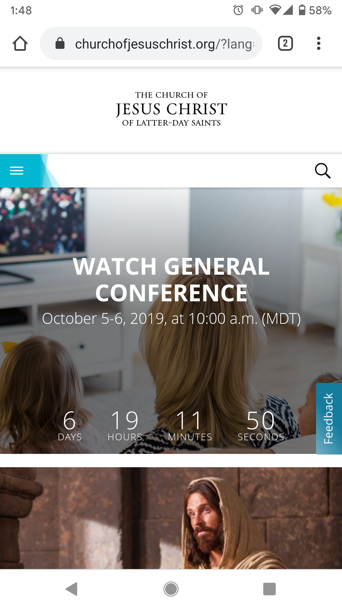
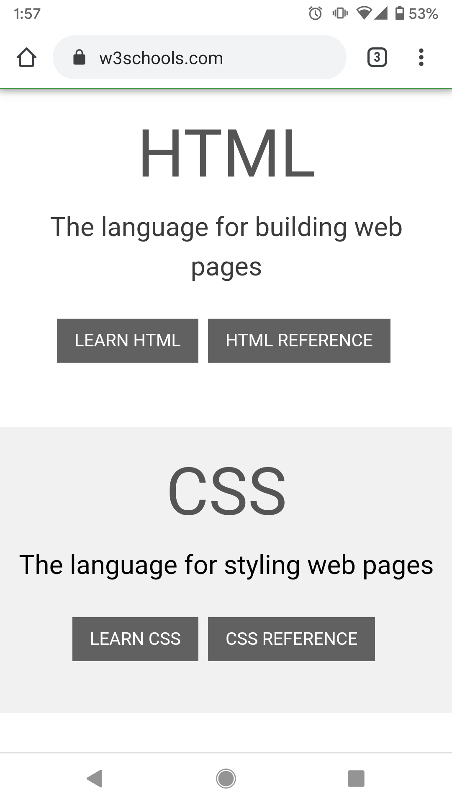

Visual Hierarchy
The Church of Jesus Christ of Latter-Day Saints
churchofjesuschrist.org The Church of Jesus Christ of Latter-Day Saints homepage exhibits the principle of Visual Hierarchy. This can be seen in the "Watch General Conference" section of the page. The most important information is the call to action, The Church wants you to watch general general conference. This is the largest font size because it is the most important.
The next most important piece of information is when conference starts, this can be found in large text across the bottom in the form of live countdown. Finally, the actual start time is slightly less important than the countdown so it is the in the smallest font size.
White Space and Clean Design
Blogger
Blogger.comThe Blogger homepage shows the principle of white space and clean design. The only things this page needs to do is explain what the website is for, provide a link to create an account, and provide a login button for those who already have an account. That is exactly what this page does. The required buttons and text are present, there are a few relevant images near the bottom, and that's it. The rest of the page is open space, allwing the eye to get pulled into the more important parts.
PARC: Proximity
W3Schools
w3schools.com The W3Schools homepage shows the principle of Proximity. It does this to group related elements together. As seen in the above screenshot, there are two sections, one for HTML and one for CSS. Each section has a title, a description, and two relevant links. It is clear that these three elements relate to eachother because they are displayed in close proximity. It is claer that the HTML section is different from the CSS section because there is a space between them.